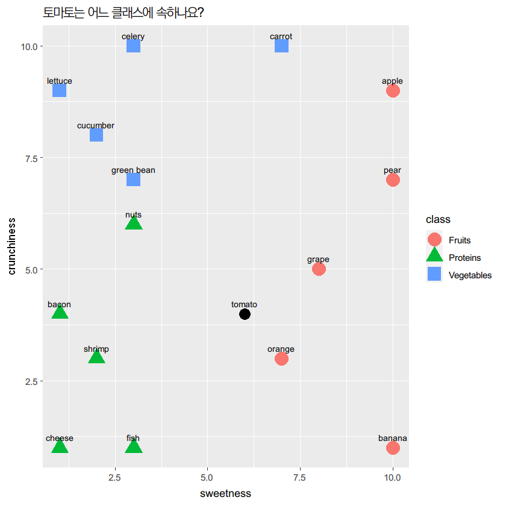
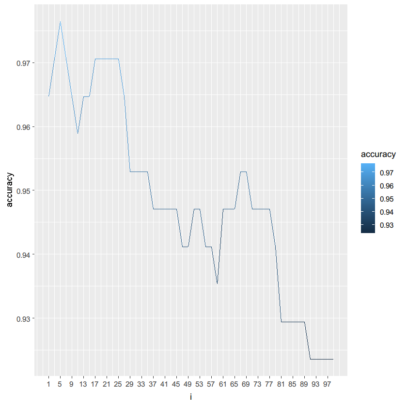

R | kNN¶
1.9 토마토 kNN¶
[문제12]¶
R을 이용해서 food.csv 읽어들인 후 토마토 단맛 6, 아삭한 맛 4를 이용해서 거리계산한 값을 dist 컬럼을 추가하고 dist 컬럼의 값을 기준으로 오름차순 순위 컬럼 rank를 생성하세요.
food <- read.csv("c:/data/food.csv", stringsAsFactors = FALSE, header = TRUE)
food$dist <- sqrt((food$sweetness - 6) ^ 2 + (food$crunchiness - 4) ^ 2)
food
| ingredient | sweetness | crunchiness | class | dist |
|---|---|---|---|---|
| apple | 10 | 9 | Fruits | 6.403124 |
| bacon | 1 | 4 | Proteins | 5.000000 |
| banana | 10 | 1 | Fruits | 5.000000 |
| carrot | 7 | 10 | Vegetables | 6.082763 |
| celery | 3 | 10 | Vegetables | 6.708204 |
| cheese | 1 | 1 | Proteins | 5.830952 |
| cucumber | 2 | 8 | Vegetables | 5.656854 |
| fish | 3 | 1 | Proteins | 4.242641 |
| grape | 8 | 5 | Fruits | 2.236068 |
| green bean | 3 | 7 | Vegetables | 4.242641 |
| lettuce | 1 | 9 | Vegetables | 7.071068 |
| nuts | 3 | 6 | Proteins | 3.605551 |
| orange | 7 | 3 | Fruits | 1.414214 |
| pear | 10 | 7 | Fruits | 5.000000 |
| shrimp | 2 | 3 | Proteins | 4.123106 |
food[order(food$dist),]
| ingredient | sweetness | crunchiness | class | dist | |
|---|---|---|---|---|---|
| 13 | orange | 7 | 3 | Fruits | 1.414214 |
| 9 | grape | 8 | 5 | Fruits | 2.236068 |
| 12 | nuts | 3 | 6 | Proteins | 3.605551 |
| 15 | shrimp | 2 | 3 | Proteins | 4.123106 |
| 8 | fish | 3 | 1 | Proteins | 4.242641 |
| 10 | green bean | 3 | 7 | Vegetables | 4.242641 |
| 2 | bacon | 1 | 4 | Proteins | 5.000000 |
| 3 | banana | 10 | 1 | Fruits | 5.000000 |
| 14 | pear | 10 | 7 | Fruits | 5.000000 |
| 7 | cucumber | 2 | 8 | Vegetables | 5.656854 |
| 6 | cheese | 1 | 1 | Proteins | 5.830952 |
| 4 | carrot | 7 | 10 | Vegetables | 6.082763 |
| 1 | apple | 10 | 9 | Fruits | 6.403124 |
| 5 | celery | 3 | 10 | Vegetables | 6.708204 |
| 11 | lettuce | 1 | 9 | Vegetables | 7.071068 |
food$rank <- rank(food$dist, ties.method = 'min')
food
| ingredient | sweetness | crunchiness | class | dist | rank |
|---|---|---|---|---|---|
| apple | 10 | 9 | Fruits | 6.403124 | 13 |
| bacon | 1 | 4 | Proteins | 5.000000 | 7 |
| banana | 10 | 1 | Fruits | 5.000000 | 7 |
| carrot | 7 | 10 | Vegetables | 6.082763 | 12 |
| celery | 3 | 10 | Vegetables | 6.708204 | 14 |
| cheese | 1 | 1 | Proteins | 5.830952 | 11 |
| cucumber | 2 | 8 | Vegetables | 5.656854 | 10 |
| fish | 3 | 1 | Proteins | 4.242641 | 5 |
| grape | 8 | 5 | Fruits | 2.236068 | 2 |
| green bean | 3 | 7 | Vegetables | 4.242641 | 5 |
| lettuce | 1 | 9 | Vegetables | 7.071068 | 15 |
| nuts | 3 | 6 | Proteins | 3.605551 | 3 |
| orange | 7 | 3 | Fruits | 1.414214 | 1 |
| pear | 10 | 7 | Fruits | 5.000000 | 7 |
| shrimp | 2 | 3 | Proteins | 4.123106 | 4 |
food[food$rank <= 3, 'class']
- 'Fruits'
- 'Proteins'
- 'Fruits'
table(food[food$rank <= 3, 'class'])
Fruits Proteins
2 1
names(head(sort(table(food[food$rank <= 3, 'class']),decreasing=TRUE),1))
'Fruits'
tomato <- data.frame(ingredient="tomato", sweetness = 6, crunchiness = 4)
# install.packages('class')
library(class)
train <- food[,2:3]
train_label <- food[,4]
test <- tomato[,2:3]
knn(train, test, train_label, k=3)
Fruits
Levels:
- 'Fruits'
- 'Proteins'
- 'Vegetables'
# install.packages('ggplot2')
library(ggplot2)
ggplot(data=food, aes(x=sweetness, y = crunchiness))+
labs(title="토마토는 어느 클래스에 속하나요? ")+
geom_point(aes(color=class, shape=class), size=6)+
geom_text(aes(label=ingredient),vjust=-1, size = 3)+
geom_point(data=tomato, colour='black', size = 5)+
geom_text(data=tomato, aes(label=ingredient),vjust=-1, size = 3)

1.10 붓꽃 kNN¶
[문제13]¶
붓꽃 데이터 입니다. kNN으로 분류해주세요.
SepalLength = 2.0
SepalWidth = 7.0
PetalLength = 1.0
PetalWidth = 0.1
iris <- read.csv("c:/data/iris.csv", stringsAsFactors = FALSE, header = TRUE)
iris_train <- iris[,1:4]
iris_train_label <- iris[,5]
iris_test <- data.frame(SepalLength = 2.0,
SepalWidth = 7.0,
PetalLength = 1.0,
PetalWidth = 0.1)
knn(iris_train, iris_test, iris_train_label, k=3)
Iris-setosa
Levels:
- 'Iris-setosa'
- 'Iris-versicolor'
- 'Iris-virginica'
6.2.1 feature scaling¶
서로 다른 변수의 값 범위를 일정한 수준으로 맞추는 작업
표준화(standardization), 정규화(normalization)
normalize <- function(x){
return ((x - min(x)) / (max(x) - min(x)))
}
standard <- function(x){
return ((x-mean(x)))/(sd(x))
}
iris[,1:4] <- lapply(iris[,1:4],normalize)
6.2.2 학습 및 테스트 데이터 만들기¶
id <- sample(1:2, nrow(iris), replace=TRUE, prob=c(0.7,0.3))
table(id)
id
1 2
104 46
iris_train <- iris[id == 1,1:4]
iris_train_label <- iris[id == 1,5]
iris_test <- iris[id == 2,1:4]
iris_test_label <- iris[id==2,5]
table(iris_train_label)
iris_train_label
Iris-setosa Iris-versicolor Iris-virginica
31 38 35
table(iris_test_label)
iris_test_label
Iris-setosa Iris-versicolor Iris-virginica
19 12 15
knn(iris_train, iris_test,iris_train_label, k=3)
- Iris-setosa
- Iris-setosa
- Iris-setosa
- Iris-setosa
- Iris-setosa
- Iris-setosa
- Iris-setosa
- Iris-setosa
- Iris-setosa
- Iris-setosa
- Iris-setosa
- Iris-setosa
- Iris-setosa
- Iris-setosa
- Iris-setosa
- Iris-setosa
- Iris-setosa
- Iris-setosa
- Iris-setosa
- Iris-versicolor
- Iris-versicolor
- Iris-versicolor
- Iris-versicolor
- Iris-versicolor
- Iris-virginica
- Iris-versicolor
- Iris-virginica
- Iris-versicolor
- Iris-versicolor
- Iris-versicolor
- Iris-versicolor
- Iris-virginica
- Iris-virginica
- Iris-virginica
- Iris-virginica
- Iris-virginica
- Iris-virginica
- Iris-virginica
- Iris-virginica
- Iris-virginica
- Iris-virginica
- Iris-virginica
- Iris-virginica
- Iris-virginica
- Iris-virginica
- Iris-virginica
Levels:
- 'Iris-setosa'
- 'Iris-versicolor'
- 'Iris-virginica'
iris_model <- knn(iris_train, iris_test,iris_train_label, k=3)
iris_model == iris_test_label
- TRUE
- TRUE
- TRUE
- TRUE
- TRUE
- TRUE
- TRUE
- TRUE
- TRUE
- TRUE
- TRUE
- TRUE
- TRUE
- TRUE
- TRUE
- TRUE
- TRUE
- TRUE
- TRUE
- TRUE
- TRUE
- TRUE
- TRUE
- TRUE
- FALSE
- TRUE
- FALSE
- TRUE
- TRUE
- TRUE
- TRUE
- TRUE
- TRUE
- TRUE
- TRUE
- TRUE
- TRUE
- TRUE
- TRUE
- TRUE
- TRUE
- TRUE
- TRUE
- TRUE
- TRUE
- TRUE
6.2.3 혼동행렬 만들기¶
# install.packages("gmodels")
library(gmodels)
CrossTable(x=iris_test_label, y=iris_model, prop.chisq = FALSE)
Cell Contents
|-------------------------|
| N |
| N / Row Total |
| N / Col Total |
| N / Table Total |
|-------------------------|
Total Observations in Table: 46
| iris_model
iris_test_label | Iris-setosa | Iris-versicolor | Iris-virginica | Row Total |
----------------|-----------------|-----------------|-----------------|-----------------|
Iris-setosa | 19 | 0 | 0 | 19 |
| 1.000 | 0.000 | 0.000 | 0.413 |
| 1.000 | 0.000 | 0.000 | |
| 0.413 | 0.000 | 0.000 | |
----------------|-----------------|-----------------|-----------------|-----------------|
Iris-versicolor | 0 | 10 | 2 | 12 |
| 0.000 | 0.833 | 0.167 | 0.261 |
| 0.000 | 1.000 | 0.118 | |
| 0.000 | 0.217 | 0.043 | |
----------------|-----------------|-----------------|-----------------|-----------------|
Iris-virginica | 0 | 0 | 15 | 15 |
| 0.000 | 0.000 | 1.000 | 0.326 |
| 0.000 | 0.000 | 0.882 | |
| 0.000 | 0.000 | 0.326 | |
----------------|-----------------|-----------------|-----------------|-----------------|
Column Total | 19 | 10 | 17 | 46 |
| 0.413 | 0.217 | 0.370 | |
----------------|-----------------|-----------------|-----------------|-----------------|
2020-10-06
1.11 기타 실습¶
[문제14]¶
R에서 emp.csv를 읽어들인 후 SAL_YN 컬럼을 추가한 후 값은 SALARY 값이 10000 이상이면 10000 이상, 아니면 10000 미만으로 입력해주세요.
library(gmodels)
emp <- read.csv("c:/data/emp.csv", header = T, stringsAsFactors = F)
emp$SAL_YN <- ifelse(emp$SALARY >= 10000, "10000이상","10000미만")
str(emp)
'data.frame': 107 obs. of 12 variables:
$ EMPLOYEE_ID : int 100 101 102 103 104 105 106 107 108 109 ...
$ FIRST_NAME : chr "Steven" "Neena" "Lex" "Alexander" ...
$ LAST_NAME : chr "King" "Kochhar" "De Haan" "Hunold" ...
$ EMAIL : chr "SKING" "NKOCHHAR" "LDEHAAN" "AHUNOLD" ...
$ PHONE_NUMBER : chr "515.123.4567" "515.123.4568" "515.123.4569" "590.423.4567" ...
$ HIRE_DATE : chr "2003-06-17" "2005-09-21" "2001-01-13" "2006-01-03" ...
$ JOB_ID : chr "AD_PRES" "AD_VP" "AD_VP" "IT_PROG" ...
$ SALARY : int 24000 17000 17000 9000 6000 4800 4800 4200 12008 9000 ...
$ COMMISSION_PCT: num NA NA NA NA NA NA NA NA NA NA ...
$ MANAGER_ID : int NA 100 100 102 103 103 103 103 101 108 ...
$ DEPARTMENT_ID : int 90 90 90 60 60 60 60 60 100 100 ...
$ SAL_YN : chr "10000이상" "10000이상" "10000이상" "10000미만" ...
CrossTable(emp$JOB_ID, emp$SAL_YN)
Cell Contents
|-------------------------|
| N |
| Chi-square contribution |
| N / Row Total |
| N / Col Total |
| N / Table Total |
|-------------------------|
Total Observations in Table: 107
| emp$SAL_YN
emp$JOB_ID | 10000미만 | 10000이상 | Row Total |
-------------|-----------|-----------|-----------|
AC_ACCOUNT | 1 | 0 | 1 |
| 0.038 | 0.178 | |
| 1.000 | 0.000 | 0.009 |
| 0.011 | 0.000 | |
| 0.009 | 0.000 | |
-------------|-----------|-----------|-----------|
AC_MGR | 0 | 1 | 1 |
| 0.822 | 3.809 | |
| 0.000 | 1.000 | 0.009 |
| 0.000 | 0.053 | |
| 0.000 | 0.009 | |
-------------|-----------|-----------|-----------|
AD_ASST | 1 | 0 | 1 |
| 0.038 | 0.178 | |
| 1.000 | 0.000 | 0.009 |
| 0.011 | 0.000 | |
| 0.009 | 0.000 | |
-------------|-----------|-----------|-----------|
AD_PRES | 0 | 1 | 1 |
| 0.822 | 3.809 | |
| 0.000 | 1.000 | 0.009 |
| 0.000 | 0.053 | |
| 0.000 | 0.009 | |
-------------|-----------|-----------|-----------|
AD_VP | 0 | 2 | 2 |
| 1.645 | 7.618 | |
| 0.000 | 1.000 | 0.019 |
| 0.000 | 0.105 | |
| 0.000 | 0.019 | |
-------------|-----------|-----------|-----------|
FI_ACCOUNT | 5 | 0 | 5 |
| 0.192 | 0.888 | |
| 1.000 | 0.000 | 0.047 |
| 0.057 | 0.000 | |
| 0.047 | 0.000 | |
-------------|-----------|-----------|-----------|
FI_MGR | 0 | 1 | 1 |
| 0.822 | 3.809 | |
| 0.000 | 1.000 | 0.009 |
| 0.000 | 0.053 | |
| 0.000 | 0.009 | |
-------------|-----------|-----------|-----------|
HR_REP | 1 | 0 | 1 |
| 0.038 | 0.178 | |
| 1.000 | 0.000 | 0.009 |
| 0.011 | 0.000 | |
| 0.009 | 0.000 | |
-------------|-----------|-----------|-----------|
IT_PROG | 5 | 0 | 5 |
| 0.192 | 0.888 | |
| 1.000 | 0.000 | 0.047 |
| 0.057 | 0.000 | |
| 0.047 | 0.000 | |
-------------|-----------|-----------|-----------|
MK_MAN | 0 | 1 | 1 |
| 0.822 | 3.809 | |
| 0.000 | 1.000 | 0.009 |
| 0.000 | 0.053 | |
| 0.000 | 0.009 | |
-------------|-----------|-----------|-----------|
MK_REP | 1 | 0 | 1 |
| 0.038 | 0.178 | |
| 1.000 | 0.000 | 0.009 |
| 0.011 | 0.000 | |
| 0.009 | 0.000 | |
-------------|-----------|-----------|-----------|
PR_REP | 0 | 1 | 1 |
| 0.822 | 3.809 | |
| 0.000 | 1.000 | 0.009 |
| 0.000 | 0.053 | |
| 0.000 | 0.009 | |
-------------|-----------|-----------|-----------|
PU_CLERK | 5 | 0 | 5 |
| 0.192 | 0.888 | |
| 1.000 | 0.000 | 0.047 |
| 0.057 | 0.000 | |
| 0.047 | 0.000 | |
-------------|-----------|-----------|-----------|
PU_MAN | 0 | 1 | 1 |
| 0.822 | 3.809 | |
| 0.000 | 1.000 | 0.009 |
| 0.000 | 0.053 | |
| 0.000 | 0.009 | |
-------------|-----------|-----------|-----------|
SA_MAN | 0 | 5 | 5 |
| 4.112 | 19.046 | |
| 0.000 | 1.000 | 0.047 |
| 0.000 | 0.263 | |
| 0.000 | 0.047 | |
-------------|-----------|-----------|-----------|
SA_REP | 24 | 6 | 30 |
| 0.018 | 0.085 | |
| 0.800 | 0.200 | 0.280 |
| 0.273 | 0.316 | |
| 0.224 | 0.056 | |
-------------|-----------|-----------|-----------|
SH_CLERK | 20 | 0 | 20 |
| 0.767 | 3.551 | |
| 1.000 | 0.000 | 0.187 |
| 0.227 | 0.000 | |
| 0.187 | 0.000 | |
-------------|-----------|-----------|-----------|
ST_CLERK | 20 | 0 | 20 |
| 0.767 | 3.551 | |
| 1.000 | 0.000 | 0.187 |
| 0.227 | 0.000 | |
| 0.187 | 0.000 | |
-------------|-----------|-----------|-----------|
ST_MAN | 5 | 0 | 5 |
| 0.192 | 0.888 | |
| 1.000 | 0.000 | 0.047 |
| 0.057 | 0.000 | |
| 0.047 | 0.000 | |
-------------|-----------|-----------|-----------|
Column Total | 88 | 19 | 107 |
| 0.822 | 0.178 | |
-------------|-----------|-----------|-----------|
[문제15]¶
유방암 데이터입니다. kNN 알고리즘을 이용해서 훈련 데이터셋, 테스트 데이터셋을 이용해서 분류가 잘 되는지 확인하세요.
data <- read.csv("c:/data/wisc_bc_data.csv", header = T, stringsAsFactors = F)
str(data)
'data.frame': 569 obs. of 32 variables:
$ id : int 87139402 8910251 905520 868871 9012568 906539 925291 87880 862989 89827 ...
$ diagnosis : chr "B" "B" "B" "B" ...
$ radius_mean : num 12.3 10.6 11 11.3 15.2 ...
$ texture_mean : num 12.4 18.9 16.8 13.4 13.2 ...
$ perimeter_mean : num 78.8 69.3 70.9 73 97.7 ...
$ area_mean : num 464 346 373 385 712 ...
$ smoothness_mean : num 0.1028 0.0969 0.1077 0.1164 0.0796 ...
$ compactness_mean : num 0.0698 0.1147 0.078 0.1136 0.0693 ...
$ concavity_mean : num 0.0399 0.0639 0.0305 0.0464 0.0339 ...
$ points_mean : num 0.037 0.0264 0.0248 0.048 0.0266 ...
$ symmetry_mean : num 0.196 0.192 0.171 0.177 0.172 ...
$ dimension_mean : num 0.0595 0.0649 0.0634 0.0607 0.0554 ...
$ radius_se : num 0.236 0.451 0.197 0.338 0.178 ...
$ texture_se : num 0.666 1.197 1.387 1.343 0.412 ...
$ perimeter_se : num 1.67 3.43 1.34 1.85 1.34 ...
$ area_se : num 17.4 27.1 13.5 26.3 17.7 ...
$ smoothness_se : num 0.00805 0.00747 0.00516 0.01127 0.00501 ...
$ compactness_se : num 0.0118 0.03581 0.00936 0.03498 0.01485 ...
$ concavity_se : num 0.0168 0.0335 0.0106 0.0219 0.0155 ...
$ points_se : num 0.01241 0.01365 0.00748 0.01965 0.00915 ...
$ symmetry_se : num 0.0192 0.035 0.0172 0.0158 0.0165 ...
$ dimension_se : num 0.00225 0.00332 0.0022 0.00344 0.00177 ...
$ radius_worst : num 13.5 11.9 12.4 11.9 16.2 ...
$ texture_worst : num 15.6 22.9 26.4 15.8 15.7 ...
$ perimeter_worst : num 87 78.3 79.9 76.5 104.5 ...
$ area_worst : num 549 425 471 434 819 ...
$ smoothness_worst : num 0.139 0.121 0.137 0.137 0.113 ...
$ compactness_worst: num 0.127 0.252 0.148 0.182 0.174 ...
$ concavity_worst : num 0.1242 0.1916 0.1067 0.0867 0.1362 ...
$ points_worst : num 0.0939 0.0793 0.0743 0.0861 0.0818 ...
$ symmetry_worst : num 0.283 0.294 0.3 0.21 0.249 ...
$ dimension_worst : num 0.0677 0.0759 0.0788 0.0678 0.0677 ...
normalize <- function(x){
return ((x - min(x)) / (max(x) - min(x)))
}
standard <- function(x){
return ((x-mean(x)))/(sd(x))
}
data[,3:32] <- lapply(data[,3:32],normalize)
id <- sample(1:2, nrow(data), replace=TRUE, prob = c(0.7, 0.3))
data_train <- data[id == 1, 3:32]
data_train_label <- data[id==1, 2]
data_test <- data[id == 2, 3:32]
data_test_label <- data[id==2, 2]
library(class)
data_model <- knn(data_train,data_test,data_train_label, k=3)
CrossTable(x=data_test_label, y = data_model, prop.chisq = F)
Cell Contents
|-------------------------|
| N |
| N / Row Total |
| N / Col Total |
| N / Table Total |
|-------------------------|
Total Observations in Table: 155
| data_model
data_test_label | B | M | Row Total |
----------------|-----------|-----------|-----------|
B | 95 | 1 | 96 |
| 0.990 | 0.010 | 0.619 |
| 0.969 | 0.018 | |
| 0.613 | 0.006 | |
----------------|-----------|-----------|-----------|
M | 3 | 56 | 59 |
| 0.051 | 0.949 | 0.381 |
| 0.031 | 0.982 | |
| 0.019 | 0.361 | |
----------------|-----------|-----------|-----------|
Column Total | 98 | 57 | 155 |
| 0.632 | 0.368 | |
----------------|-----------|-----------|-----------|
# 훈련데이터, 테스트데이터 생성
library(caret)
idx <- createDataPartition(y=data$diagnosis, p=0.7, list=FALSE)
data <- data[-1]
wbcd_train <- data[idx,]
wbcd_test <- data[-idx,]
wbcd_train_labels <- wbcd_train$diagnosis
wbcd_test_labels <- wbcd_test$diagnosis
NROW(wbcd_train)
399
NROW(wbcd_test)
170
table(wbcd_train$diagnosis)
B M
250 149
table(wbcd_test$diagnosis)
B M
107 63
# 정확도
library(class)
wbcd_test_pred <- knn(train = wbcd_train[-1], test=wbcd_test[-1], wbcd_train_labels, k=5)
accuracy <- sum(wbcd_test_labels == wbcd_test_pred) / NROW(wbcd_test_labels)
accuracy
0.976470588235294
[문제16]¶
k값 변화율에 따라 정확도를 시각화해주세요.
i = 1
wbcd_test_pred <- knn(train = wbcd_train[-1], test = wbcd_test[-1],
cl = wbcd_train_labels, k=i)
accuracy <- sum(wbcd_test_pred == wbcd_test_labels) / length(wbcd_test_labels)
result <- data.frame(i, accuracy)
accuracy
0.964705882352941
result
| i | accuracy |
|---|---|
| 1 | 0.9647059 |
for (i in seq(3,100,2)) {
wbcd_test_pred <- knn(train = wbcd_train[-1], test = wbcd_test[-1],
cl = wbcd_train_labels, k=i)
accuracy <- sum(wbcd_test_pred == wbcd_test_labels) / length(wbcd_test_labels)
result <- rbind(result, data.frame(i, accuracy))
}
result
| i | accuracy |
|---|---|
| 1 | 0.9647059 |
| 3 | 0.9705882 |
| 5 | 0.9764706 |
| 7 | 0.9705882 |
| 9 | 0.9647059 |
| 11 | 0.9588235 |
| 13 | 0.9647059 |
| 15 | 0.9647059 |
| 17 | 0.9705882 |
| 19 | 0.9705882 |
| 21 | 0.9705882 |
| 23 | 0.9705882 |
| 25 | 0.9705882 |
| 27 | 0.9647059 |
| 29 | 0.9529412 |
| 31 | 0.9529412 |
| 33 | 0.9529412 |
| 35 | 0.9529412 |
| 37 | 0.9470588 |
| 39 | 0.9470588 |
| 41 | 0.9470588 |
| 43 | 0.9470588 |
| 45 | 0.9470588 |
| 47 | 0.9411765 |
| 49 | 0.9411765 |
| 51 | 0.9470588 |
| 53 | 0.9470588 |
| 55 | 0.9411765 |
| 57 | 0.9411765 |
| 59 | 0.9352941 |
| 61 | 0.9470588 |
| 63 | 0.9470588 |
| 65 | 0.9470588 |
| 67 | 0.9529412 |
| 69 | 0.9529412 |
| 71 | 0.9470588 |
| 73 | 0.9470588 |
| 75 | 0.9470588 |
| 77 | 0.9470588 |
| 79 | 0.9411765 |
| 81 | 0.9294118 |
| 83 | 0.9294118 |
| 85 | 0.9294118 |
| 87 | 0.9294118 |
| 89 | 0.9294118 |
| 91 | 0.9235294 |
| 93 | 0.9235294 |
| 95 | 0.9235294 |
| 97 | 0.9235294 |
| 99 | 0.9235294 |
library(ggplot2)
ggplot(result, aes(x=i, y=accuracy))+
geom_line(aes(color=accuracy))+
scale_x_continuous(breaks = seq(1,100,4))

[문제17]¶
모델의 정밀도, 재현율, F1점수 계산해주세요.
CrossTable(x=wbcd_test_labels, y = wbcd_test_pred, prop.chisq = F)
Cell Contents
|-------------------------|
| N |
| N / Row Total |
| N / Col Total |
| N / Table Total |
|-------------------------|
Total Observations in Table: 170
| wbcd_test_pred
wbcd_test_labels | B | M | Row Total |
-----------------|-----------|-----------|-----------|
B | 105 | 2 | 107 |
| 0.981 | 0.019 | 0.629 |
| 0.905 | 0.037 | |
| 0.618 | 0.012 | |
-----------------|-----------|-----------|-----------|
M | 11 | 52 | 63 |
| 0.175 | 0.825 | 0.371 |
| 0.095 | 0.963 | |
| 0.065 | 0.306 | |
-----------------|-----------|-----------|-----------|
Column Total | 116 | 54 | 170 |
| 0.682 | 0.318 | |
-----------------|-----------|-----------|-----------|
# 정확도 (accuracy)
(105 + 52) / 170
0.923529411764706
# Benign 정밀도 (precision)
105 / (105 + 11)
0.905172413793103
# Malignant 정밀도 (precision)
52 / (52 + 2)
0.962962962962963
# Benign 재현율 (recall)
105 / (105 + 2)
0.981308411214953
# Malignant 재현율 (recall)
52 / (52 + 11)
0.825396825396825
# Benign F1 점수
2 * 0.91 * 0.98 / (0.91 + 0.98)
0.943703703703704
# Malignant F1 점수
2 * 0.96 * 0.83 / (0.96 + 0.83)
0.890279329608939
library(caret)
# Benign 정밀도
posPredValue(wbcd_test_pred, as.factor(wbcd_test_labels), positive = "B")
0.905172413793103
# Malignant 정밀도
posPredValue(wbcd_test_pred, as.factor(wbcd_test_labels), positive = "M")
0.962962962962963
# Benign 민감도, 재현율
sensitivity(wbcd_test_pred, as.factor(wbcd_test_labels), positive = "B")
0.981308411214953
# Malignant 민감도, 재현율
sensitivity(wbcd_test_pred, as.factor(wbcd_test_labels), positive = "M")
0.825396825396825